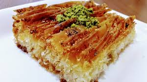

Karnabaharları hafif diri kalacak şekilde haşlayın. Sudan aldığınız karnabaharlar ılımadan sosla buluşturmayın. Sos, karnabaharınızın büyüklük miktarına göre artıp azabilir. Kaşar peynirlerini rendeleyip buzlukta saklayabilirsiniz. Ardından buzlu soğuk bir şekilde koyabilirsiniz üzerine. Bu sayede kurumayacaktır.
TAŞ KASE TARİFİ
verim: 8 baharatlı yumurta yarısı
- 1/2 su bardağı beyaz şeker
- 1/4 su bardağı margarin, eritilmiş
- 3/4 çay kaşığı öğütülmüş hindistan cevizi
- 1/2 su bardağı süt
- 1 çay kaşığı kabartma tozu
- 1 fincan çok amaçlı un
Karnabaharları çiçeklerine ayırıp güzelce yıkayın. Ardından içi su dolu bir tencereye alın ve hafif yumuşayana kadar 10 dakika kadar haşlayın.
Çok hafif yumuşayan karnabaharları tencereden alıp süzgeçten geçirin. Bir köşede ılınmaya bırakın.
Bir kabın içerisinde tüm sos malzemelerini karıştırın. Karnabaharları bir cam borcamın ya da fırın pişirme kabının içerisine yayın. Üzerine hazırladığınız sosu gezdirin.
Ardından güzelce karıştırın. 180 derecede ısıtılmış fırında 15-20 dakika kadar pişirin. Fırından almadan önce karnabaharların üzerine 1 su bardağı kaşar peynirini aktarın.
Yeniden fırına verin. Peynirler eriyip kızarana kadar bir süre daha pişirin. Ardından çıkarıp sıcak sıcak servis edin. Afiyetler olsun!
Perde Tatlısı

Perde Tatlısı Tarifi İçin Malzemeler
- Yarım paket baklavalık yufka
- 1 su bardağı irmik
- 1 su bardağı sıvı yağ
- 50 gr tereyağı
Harcı İçin
- 2 yumurta
- 1 su bardağı sıvı yağ
- 1 su bardağı süt
- Yarım su bardağı şeker
- Kırılmış ceviz ya da fındık
Şerbeti
- 3 su bardağı şeker
- 4 su bardağından iki parmak eksik su
- 1-2 damla limon suyu
Tereyağını eritip sıvı yağ ile karıştırıyoruz
Baklavalık yufkanın kısa tarafı bize gelecek şekilde tezgaha seriyoruz fırçayla yağlıyoruz.
İrmik serpiyoruz ve iki tarafından büzüştürüyoruz fırın tepsisine dikkatlice yerleştiriyoruz.
Diğer yufkalara da aynı işlemi uyguluyoruz.
Geriye kalan yağ karışımını da üstüne gezdirip fırçayla bulaşmasını sağlıyoruz.
Önceden ısıtılmış 180° derece fırına veriyoruz ve 10 dakika kadar pişiriyoruz.Diğer tarafta harcımızı hazırlıyoruz.
Yumurta ve şekeri güzelce çırpıp sıvı yağ ve sütü ekliyoruz. kabartma tozu ve fındığı/cevizi de ekliyoruz ve karıştırıyoruz.
Tatlımızı fırından çıkarıyoruz ve hazırladığımız harcı her yerine gelecek şekilde dikkatlice gezdiriyoruz.
Tekrar fırına sürüp güzelce kızarana kadar pişiriyoruz.
Tatlının ilk sıcağı çıktıktan sonra soğuk şerbeti üzerine gezdiriyoruz.
1-2 saat dinlendirip servis ediyoruz.Şerbeti bir tencerede kaynatıp soğutuyoruz
şimdiden deneyeceklerin ellerine sağlık afiyet olsun ❤ fotoğrafları göndermeyi unutmayın.
Omlet Tarifi
Omlet Tarifi İçin Malzemeler
- 4 yumurta
- Tuz
- 1 yemek kaşığı tereyağ
- 7-8 dilim kaşar peyniri
Yumurtaları köpürene kadar çırpalım.
Üzerine tuz ilave edip bir kaç saniye daha çırpıp tavaya yağı koyalım.
Eriyince yumurtayı döküp bir kapakla kapatalım iyice kabarınca üzerine kaşar peyniri koyup ikiye katlayalım.
Peynir eridiğinde yenmek için hazır. .
Sebze Çorbası Tarifi
Sebze Çorbası Tarifi İçin Malzemeler
- Yarım yemek kaşığı un
- 1 yemek kaşığı tereyağ
- 1 havuç
- 1 soğan
- 1 patates
- Tuz, karabiber
- 1 su bardağı ılık su
Tencereye yağı koyup unu ekleyip uzunca kavuruyoruz.
Üzerine ince ince doğranan soğanları ekleyip kavurmaya devam ediyoruz.
Havucu küp küp doğrayıp ekleyelim.
En son patatesleri küp küp doğrayıp ekleyip baharatları ilave ediyoruz.
Üzerine önce ılık suyu sonra normal su ekleyip kaynayıp yumuşayınca ezecek ile ezerek yaptım.
Blendır ile de yapabilirsiniz ama ben biraz taneli olsun istedim.
Etli Wrap Tarifi İçin Malzemeler
Ana Malzemeler
- 250gr dana bonfile
- 2 adet Kapya biber
- 2 adet Yeşil biber
- 250gr Mantar
- 1 adet Soğan
- 1 kaşık Salça
- 2 adet Lavaş
Baharatlar
- 1 tutam Tuz
- 1 tutam Karabiber
- 1 tutam Pul biber
Ayrıca
- 1 çay kaşığı toz şeker
Öncelikle 2 yemek kaşığı sıvı yağı tavamıza ekliyoruz.
Üzerine ince kesilmiş soğanlarımızı koyuyoruz ve içerisine 1 çay kaşığı toz şekeri ekliyoruz.
Karamelize ettiğimiz soğanların üzerine jülyen doğranmış kapya biber ve yeşil biberi ekliyoruz.
Üzerine 1 tatlı kaşığı salça ekledim.
Azıcık kendini bırakmaya başladığında mantarı ekliyoruz ve üzerini kapatarak pişmesini bekliyoruz.
Ben etimi düdüklü tencereye koyup hızlıca pişmesini sağladım isterseniz siz ayrı bir tavada yapabilirsiniz.
Daha sonra etler ile biberleri karıştırdım üzerine baharatlarımı ekledim.
Sonrasında lavaşa hepsini eşit parçalarda ekleyerek sıkıca alttan kapatarak sarıyoruz.
Sonrasında tost makinesine koyuyoruz ve çarpraz şekilde kesip servis ediyoruz. Hepinize afiyet olsun 🤩